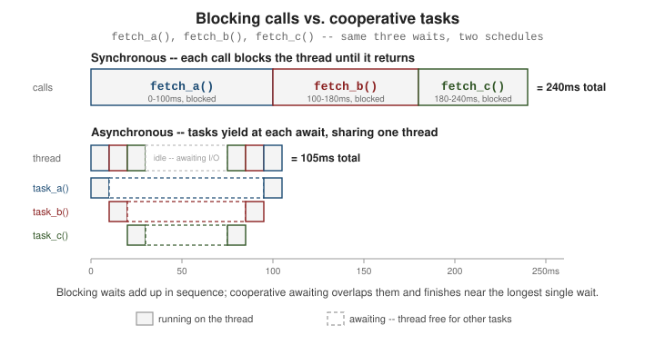

Concurrency and Async
|
This content was generated with the assistance of AI and should be verified against the official documentation before being relied on in production. |
Python offers three different ways to run work concurrently — threading, multiprocessing, and asyncio — and picking the wrong one for the job either wastes effort or does not speed anything up at all.
threading: Concurrency for I/O-Bound Work
A Thread lets several pieces of Python code make progress "at the same time" from the program’s point of
view. That "at the same time" is real when threads are waiting on I/O (a network call, a disk read, a
time.sleep()), because the waiting thread releases the GIL (Global Interpreter Lock) while it blocks.
It is not real for CPU-bound Python bytecode: the GIL lets only one thread execute Python bytecode at a
time, so pure computation spread across threads does not run any faster than a single thread — full details
in the threading module documentation.
import threading
import time
def download(name: str, seconds: float) -> None:
print(f"{name}: starting")
time.sleep(seconds) # simulates a network wait; releases the GIL
print(f"{name}: done")
t1 = threading.Thread(target=download, args=("file1", 1.0))
t2 = threading.Thread(target=download, args=("file2", 1.0))
t1.start()
t2.start()
t1.join() # wait for t1 to finish
t2.join() # wait for t2 to finish
# elapsed time is ~1.0s, not ~2.0s -- the two sleeps overlappedUse threads for I/O-bound work (network requests, file I/O, waiting on other processes). Do not reach for threads to speed up a CPU-bound loop — see the next section.
multiprocessing and concurrent.futures: Parallelism for CPU-Bound Work
multiprocessing sidesteps the GIL entirely by running each worker in its own interpreter process, each
with its own GIL — true parallelism across CPU cores, at the cost of higher startup overhead and needing to
serialize (pickle) data passed between processes. Reference:
the multiprocessing module documentation.
from multiprocessing import Process
def square_sum(n: int) -> None:
total = sum(i * i for i in range(n)) # CPU-bound work
print(f"sum of squares up to {n}: {total}")
p1 = Process(target=square_sum, args=(5_000_000,))
p2 = Process(target=square_sum, args=(5_000_000,))
p1.start()
p2.start()
p1.join()
p2.join()
# both processes run on separate cores, in parallelconcurrent.futures is the higher-level API over both models: ThreadPoolExecutor (I/O-bound, backed by
threads) and ProcessPoolExecutor (CPU-bound, backed by processes) share the same interface, so switching
between them is a one-line change. Documented at
the concurrent.futures module documentation.
from concurrent.futures import ThreadPoolExecutor, ProcessPoolExecutor
def fetch(url: str) -> int:
return len(url) # stand-in for an I/O-bound network call
def crunch(n: int) -> int:
return sum(i * i for i in range(n)) # CPU-bound work
with ThreadPoolExecutor(max_workers=4) as pool:
lengths = list(pool.map(fetch, ["a", "bb", "ccc"])) # I/O-bound -> threads
with ProcessPoolExecutor(max_workers=4) as pool:
totals = list(pool.map(crunch, [1_000_000, 2_000_000])) # CPU-bound -> processesasyncio: Cooperative Concurrency on a Single Thread
asyncio runs many I/O-bound operations concurrently on a single thread by having each task voluntarily
give up control at an await point instead of being pre-emptively switched out. A function defined with
async def is a coroutine function; calling it returns a coroutine object that does nothing until it is
awaited or scheduled. The entry point from ordinary code is asyncio.run(), and full task/coroutine mechanics
are documented at Coroutines and Tasks, with the module
overview at the asyncio module documentation.
import asyncio
async def fetch(name: str, seconds: float) -> str:
print(f"{name}: starting")
await asyncio.sleep(seconds) # yields control back to the event loop
print(f"{name}: done")
return name
async def main() -> None:
result = await fetch("page1", 1.0) # runs one coroutine, waits for it
print(result)
asyncio.run(main()) # creates the event loop, runs main(), closes the loopA single await in sequence does not buy any concurrency — it just runs one coroutine after another. Real
concurrency needs several tasks scheduled together, with asyncio.gather() or, from Python 3.11,
asyncio.TaskGroup:
import asyncio
async def fetch(name: str, seconds: float) -> str:
await asyncio.sleep(seconds)
return name
async def main() -> None:
# gather: runs both concurrently, returns results in the same order as the inputs
results = await asyncio.gather(
fetch("page1", 1.0),
fetch("page2", 1.0),
)
print(results) # ~1.0s elapsed, not ~2.0s
# TaskGroup (3.11+): structured alternative, cancels siblings if one task raises
async with asyncio.TaskGroup() as tg:
tg.create_task(fetch("page3", 1.0))
tg.create_task(fetch("page4", 1.0))
asyncio.run(main())
Choosing Between Them
-
I/O-bound, many concurrent operations (thousands of network requests, WebSocket connections):
asyncioscales best — no per-task thread or process overhead, just a coroutine object. -
I/O-bound, a handful of blocking calls, or working with a library that is not async-aware:
threading(directly, or viaThreadPoolExecutor) is simpler to retrofit than rewriting everything as coroutines. -
CPU-bound work: only
multiprocessing(directly, or viaProcessPoolExecutor) achieves real parallelism, because it is the only one of the three that escapes the GIL.
Note that none of this section’s three consulted books cover async/await at all — the feature postdates
all of them (the oldest, Learning Python, predates Python 3.1) — so this page is grounded entirely in the
official threading, multiprocessing, concurrent.futures, and asyncio documentation linked above.
How the Models Differ: GIL, Threads, Processes, and the Event Loop
Python offers three concurrency models, and the right one depends on where the program waits.
-
Threads (
threading,ThreadPoolExecutor) share memory and are scheduled by the operating system. In CPython a global interpreter lock (GIL) lets only one thread execute Python bytecode at a time, switching between threads every few milliseconds (sys.getswitchinterval()). A thread that blocks on I/O (a socket,time.sleep, a file read) or in a C extension that releases the lock lets another thread run, so threads speed up I/O-bound programs but not pure-Python CPU-bound ones. The GIL protects the interpreter’s own data structures; it does not make yourcounter += 1atomic, because that is several bytecodes. -
Processes (
multiprocessing,ProcessPoolExecutor) run separate interpreters, each with its own GIL and memory, so CPU-bound work scales across cores at the price of pickling arguments and results between processes and a start-up cost. -
asyncioruns many tasks on one thread. A task is a coroutine that voluntarily yields at eachawait; the event loop then runs another ready task. It handles thousands of idle network connections cheaply, but a single blocking call (or a long computation) stalls every task.
Recent CPython releases have an optional free-threaded build (an interpreter without the GIL, see PEP 703) and per-interpreter GILs for subinterpreters; they are opt-in, and the guidance above remains the default for portable code.
Threads: shared state needs discipline
Threads are easy to start and easy to get wrong, because they interleave unpredictably. Protect shared mutable state with a
Lock (use with lock:), and prefer passing data through a queue.Queue, which is thread-safe and gives back-pressure when
you give it a maxsize. A sentinel value (None here) tells a consumer to stop. ThreadPoolExecutor returns a Future
per submission, as_completed yields futures in completion order, and a worker’s exception is stored and re-raised by
result(), so errors are not lost. Make worker threads daemon threads only when losing them at exit is acceptable, and always
join the others.
import queue
import threading
import time
from concurrent.futures import ThreadPoolExecutor, as_completed
# a lock makes read-modify-write on shared state safe
class Counter:
def __init__(self):
self.value = 0
self._lock = threading.Lock()
def add(self, n):
with self._lock: # without it, += is several bytecodes and can interleave
self.value += n
counter = Counter()
threads = [threading.Thread(target=lambda: [counter.add(1) for _ in range(10_000)]) for _ in range(4)]
for t in threads: t.start()
for t in threads: t.join()
print(counter.value)
# producer/consumer with queue.Queue: thread-safe hand-off, with a sentinel for shutdown
q = queue.Queue(maxsize=2)
results = []
def consumer():
while (title := q.get()) is not None:
results.append(title.upper())
q.task_done()
q.task_done()
c = threading.Thread(target=consumer)
c.start()
for title in ["dune", "emma", "ulysses"]:
q.put(title) # blocks when the queue is full: natural back-pressure
q.put(None)
q.join()
c.join()
print(results)
# a pool maps I/O-bound calls; as_completed yields in completion order
def fetch(title, delay):
time.sleep(delay) # stands in for network I/O; the GIL is released here
return title
with ThreadPoolExecutor(max_workers=3) as pool:
futures = [pool.submit(fetch, t, d) for t, d in [("slow", 0.3), ("fast", 0.05), ("mid", 0.15)]]
print([f.result() for f in as_completed(futures)])
failing = pool.submit(lambda: 1 / 0)
try:
failing.result() # the worker's exception is re-raised here
except ZeroDivisionError as exc:
print("raised in caller:", exc)Output:
40000
['DUNE', 'EMMA', 'ULYSSES']
['fast', 'mid', 'slow']
raised in caller: division by zeroProcesses and the main-module guard
A process pool starts new interpreters. On Windows and macOS the default start method is spawn, which imports your
main module again in each child, so everything that starts work must sit under if __name__ == "__main__":, or each child
would start its own pool. Arguments and results travel by pickle, so lambdas, open files and locks cannot be sent and
large objects are expensive to copy; send a file name rather than the file contents.
import sys
from concurrent.futures import ProcessPoolExecutor
def count_primes(limit):
"""CPU-bound work: runs in a separate process with its own interpreter and GIL."""
count = 0
for n in range(2, limit):
if all(n % d for d in range(2, int(n ** 0.5) + 1)):
count += 1
return count
if __name__ == "__main__": # required: child processes re-import this module
print("GIL switch interval (s):", sys.getswitchinterval())
with ProcessPoolExecutor(max_workers=2) as pool:
print(list(pool.map(count_primes, [1_000, 5_000, 10_000])))Output:
GIL switch interval (s): 0.005
[168, 669, 1229]asyncio: the event loop
asyncio.run(main()) creates an event loop and runs the coroutine to completion. Calling fetch(...) only creates a coroutine
object; awaiting it, or wrapping it in a task with create_task, is what runs it. At each await on something not yet
ready the coroutine suspends, and the loop picks the next ready task.
The sample demonstrates the building blocks: gather (concurrent, ordered results, optional return_exceptions=True),
create_task (start now, collect later), wait_for (cancel on timeout by raising CancelledError inside the awaited code,
so cleanup belongs in try/finally), and asyncio.to_thread to move blocking code off the loop thread (3.9+). Since
Python 3.11, asyncio.TaskGroup and asyncio.timeout add structured concurrency, and they are the better choice for new
code because a failing child cancels its siblings and the exceptions are grouped.
import asyncio
async def fetch(title, delay):
print(f"start {title}")
await asyncio.sleep(delay) # yields control to the event loop
print(f"done {title}")
return title.upper()
async def main():
# gather runs coroutines concurrently and returns results in argument order
results = await asyncio.gather(fetch("dune", 0.2), fetch("emma", 0.1))
print(results)
# create_task schedules immediately; awaiting later collects the result
task = asyncio.create_task(fetch("ulysses", 0.05))
print("task scheduled, doing other work")
await asyncio.sleep(0) # one trip around the loop lets the task start
print(await task)
# timeouts cancel the awaited work by raising CancelledError inside it
try:
await asyncio.wait_for(fetch("slow", 5), timeout=0.1)
except asyncio.TimeoutError:
print("timed out")
# exceptions: gather(return_exceptions=True) keeps going and returns them
async def boom():
raise ValueError("bad isbn")
out = await asyncio.gather(fetch("ok", 0), boom(), return_exceptions=True)
print(out[0], repr(out[1]))
# blocking code must leave the loop thread
import time
start = asyncio.get_running_loop().time()
await asyncio.gather(*(asyncio.to_thread(time.sleep, 0.1) for _ in range(3)))
print("3 blocking sleeps in threads took about 0.1s:", asyncio.get_running_loop().time() - start < 0.25)
asyncio.run(main())Output:
start dune
start emma
done emma
done dune
['DUNE', 'EMMA']
task scheduled, doing other work
start ulysses
done ulysses
ULYSSES
start slow
timed out
start ok
done ok
OK ValueError('bad isbn')
3 blocking sleeps in threads took about 0.1s: TrueCommon asyncio mistakes are forgetting to await a coroutine (Python warns "coroutine … was never awaited"), calling a
blocking function such as requests.get or time.sleep inside a coroutine, creating a task and dropping the reference
(the loop keeps only a weak reference, so keep the task or add it to a set), and using asyncio.run inside a running loop
(for example in a notebook, where you await directly instead).
Every snippet in this section was run with CPython 3.14.8 and the output shown is the real output; the timing-based sleeps are chosen so the ordering is stable.
See Also
-
Standard Library Tour — where
threading,multiprocessing, andasynciosit among the rest of the standard library. -
Unit Testing with pytest & Mocking — testing code that uses threads, processes, or coroutines.